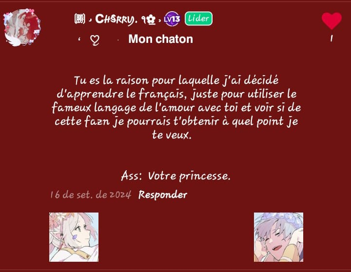

Sempre marcamos a presença do outro no mural... e eu consegui recuperar alguns desses textos maravilhosos
Lembra de quandoeu assisti Harry Potter?
Assim como a Pedra Filosofal é a fonte da vida eterna, você
é a fonte da minha felicidade eterna que eu devo proteger do mal. Se você se perder, sou capaz de te buscar até mesmo na
Câmara Secreta, enfrentando até mesmo um Basilisco para te salvar. Alguns dizem
que amar demais é um crime, e por isso Azkaban está atrás de mim por te amar tanto,
mas você sempre pode me encontrar na Sala Precisa, onde poderemos nos amar sem o julgamento dos outros. A
Taça Tribuxo não me interessa, mas se for necessário enfrentarei Dragões, irei
mergulhar no Lago Negro e correr cada canto do Labirinto só para te ter comigo
novamente. O Vira-Tempo é um artefato interessante, não acha? Invadir o Ministério da Magia
não parece uma má ideia para conseguir um, assim, poderei consertar meus erros e reviver os melhores momentos contigos. Terei que sair em um aventura
para buscar as Horcruxes do mal e garantir a nossa segurança, e assim como o Snape ajudou
o Harry com o Patrono, você me ajudou, guiando meu
caminho nos momentos de dúvida e mostrando as escolhas certas.
Para mim, sua amizade é como ym Voto Perpétuo. E se um dia eu me perder, espero ter o desiluminador
para te encontrar novamente.